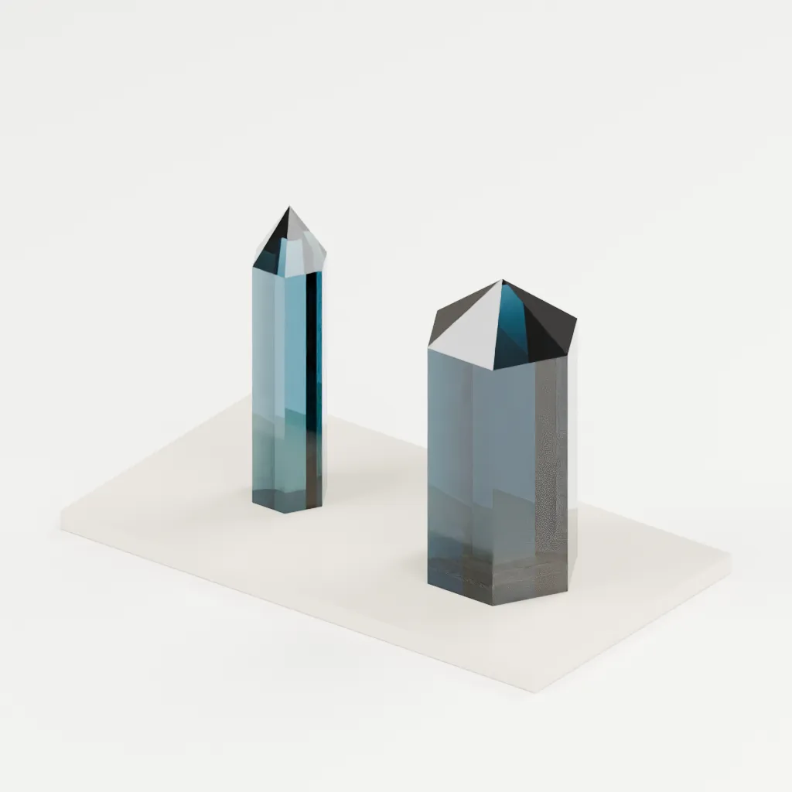

sand3d
sand3d GitHub
GitHubGuides › Glass and ice
On this page
Glass and ice
Transparent objects need thickness and something to see through them. Build closed crystals or ice masses, preserve their facets, then use absorption to tint light as it travels through the material.

Two closed crystals
import sand3d as s3d def crystals(seed=0): height, gap = 65, 65 crystals = [] for index, diameter in enumerate((20, 40)): base = s3d.ring(6, diameter / 2) shoulder = s3d.ring(6, diameter / 2, on=s3d.Frame((0, 0, height))) points = list(base) + list(shoulder) + [(0, 0, height + 15)] crystal = s3d.hull("crystal", points) s3d.material(crystal, "glass", absorb="#70b7c5", absorb_distance=35) crystals.append(s3d.at(crystal, x=(index - .5) * gap, z=5)) ground = s3d.box("ground", 145, 80, 5) s3d.material(ground, "ceramic", color="#d9ceb8") return s3d.assembly("crystals", ground, crystals)
Two hexagonal crystals share one absorption colour and distance. Their different widths give light different depths to travel through. The pale base provides a visible background.
A hull around two rings and a tip closes each crystal. Its planar faces give the transparent surface a readable outline and changing reflections. A thin open sheet does not provide the same enclosed depth.
Build the shape, then the medium
Give the ice or crystal a closed volume and recognisable facets. Choose the silhouette before the tint.
Put a background, ground or bank behind it. Refraction and absorption need something visible through the object.
Start from the
glassorwaterpreset of material. Keep its transmission, index of refraction and roughness unless the intended appearance needs an override.Set
absorbandabsorb_distancefor the depth tint. The absorption colour describes what white light becomes after travelling that distance in program units.
Colour, opacity and transmission are separate controls. Surface colour tints the surface; transmission lets light pass through it. Lowering opacity does not make a depth-dependent absorbing medium. Use absorption for coloured glass or ice instead of alpha.
See material for the controls and their ranges. Avoid stacked coincident transparent shells: use deliberate closed volumes with clear boundaries.
Thickness in different viewers
The thickness material parameter informs glTF raster viewers. Its default, "auto", is estimated at export as twice the volume divided by the surface area. It is a viewing hint, not an operation that thickens the mesh. Cycles follows the actual depth of the closed geometry instead.
The review renderer approximates refraction, Fresnel reflection and absorption. Use Cycles to assess full light transport.
Verbs used
Next: Resolution and cost to keep the geometry budget proportional to the visible shape.